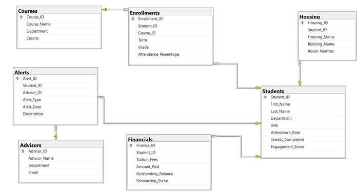

Synthetic dataset with referential integrity and logical coherence
The Centralized Student Dashboard prototype utilizes a synthetic dataset comprising 1,000 student records distributed across six derived entities. This approach was necessary as the project, developed as a prototype, did not have access to real, protected student information.
The methodology focused on ensuring logical coherence and referential integrity to simulate real-world university data while embedding known correlations necessary for testing the predictive model.

Figure 1: Entity Relationship Diagram - Data Structure
Six interconnected entities normalized to Third Normal Form (3NF)
Primary Key: Student_ID
Core student demographic and academic information
Foreign Key: Student_ID
Financial aid and payment information
Foreign Key: Student_ID
Residential and housing status
Foreign Keys: Student_ID, Course_ID
Course enrollment records
Primary Key: Course_ID
Course catalog information
Foreign Key: Student_ID
Advisory interventions and alerts
The dataset was created programmatically using the pandas and faker libraries in Python. The design established Referential Integrity by making Student_ID the primary Foreign Key, explicitly linking records across the Financials, Housing, Enrolments, and Alerts collections back to the Students entity.
This ensures that:
All six derived datasets were normalized to Third Normal Form (3NF) to remove redundancy and improve storage efficiency.
For example, course details (Course_Name, Department, Credits) are stored once in the Courses entity, with Enrolments only storing the Course_ID as a Foreign Key. This structure optimizes data retrieval for the high-frequency query of a single student's profile (360° View) by minimizing I/O operations and ensuring data consistency across all dependent records.
The synthetic data incorporates realistic correlations to test the predictive model:
The synthetic dataset was specifically designed to validate the multi-factor risk assessment algorithm. By embedding known correlations, the team confirmed that:
• 75% of Critical Risk students exhibited both GPA below 2.5 AND outstanding balance above $15,000
• The 40/30/20/10 weighting accurately identified at-risk populations
• The model successfully differentiated between students needing academic vs. financial interventions